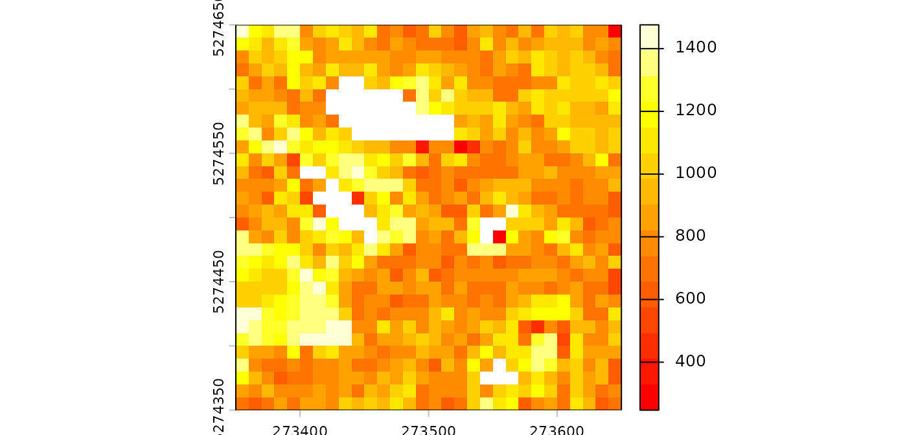

lasR is a standalone software that can work
independently outside of R. The R part of lasR is only an
API to conveniently build pipelines, but this task could be performed by
another software such as a Python package, a QGIS plugin, or dedicated
software. Currently, the only existing API is the lasR
package.
However, the R package version offers additional stages that allow injecting R code into the pipeline. These stages cannot exist in standalone software independent of R.
Rasterize
In the tutorial, we mentioned that
rasterize() supports the injection of a user-defined R
expression. This is equivalent to pixel_metrics() from the
package lidR. Any user-defined function can be mapped,
making it extremely versatile but slower.
Let’s compute the map of the median intensity by injecting a
user-defined expression. Like in lidR, the attributes of
the point cloud are named: X, Y,
Z, Intensity, gpstime,
ReturnNumber, NumberOfreturns,
Classification, UserData,
PointSourceID, R, G,
B, NIR. For users familiar with the
lidR package, note that there is no
ScanAngleRank/ScanAngle; instead the scanner angle is
always named ScanAngle and is numeric. Also flags are named
Withheld, Synthetic and
Keypoint.
pipeline = rasterize(10, median(Intensity))
ans = exec(pipeline, on = f)
terra::plot(ans, mar = c(1, 1, 1, 3), col = heat.colors(15))
Notice that, in this specific case, using
rasterize(10, "i_median") is more efficient.
Callback
The callback stage holds significant importance as the
second and last entry point to inject R code into the pipeline,
following rasterize(). For those familiar with the
lidR package, the initial step often involves reading data
with lidR::readLAS() to expose the point cloud as a
data.frame object in R. In contrast, lasR
loads the point cloud optimally in C++ without exposing it directly to
R. However, with callback, it becomes possible to expose
the point cloud as a data.frame for executing specific R
functions.
Similar to lidR, the attributes of the point cloud in
lasR are named: X, Y,
Z, Intensity, gpstime,
ReturnNumber, NumberOfreturns,
Classification, UserData,
PointSourceID, R, G,
B, NIR. Notably, for users accustomed to the
lidR package, the scanner angle is consistently named
ScanAngle and is numeric, as opposed to
ScanAngleRank/ScanAngle. Additionally, flags are named
Withheld, Synthetic, and
Keypoint.
Let’s delve into a simple example. For each LAS file, the
callback loads the point cloud as a data.frame
and invokes the meanz() function on the
data.frame.
meanz = function(data){ return(mean(data$Z)) }
call = callback(meanz, expose = "xyz")
ans = exec(call, on = f)
print(ans)
#> - 809.0835
#> - 13.27202Here the output is a list with two elements because we
processed two files (f is not displayed in this document).
The average Z elevation are respectively 809.08 and 13.27 in each
file.
Be mindful that, for a given LAS/LAZ file, the point cloud may contain more points than the original file if the file is loaded with a buffer. Further clarification on this matter will be provided later.
The callback function is versatile and can also be
employed to edit the point cloud. When the user-defined function returns
a data.frame with the same number of rows as the original
one, the function edits the underlying C++ dataset. This enables users
to perform tasks such as assigning a class to a specific point. While
physically removing points is not possible, users can flag points as
Withheld. In such cases, these points will not be processed
in subsequent stages, they are discarded.
edit_points = function(data)
{
data$Classification[5:7] = c(2L,2L,2L)
data$Withheld = FALSE
data$Withheld[12] = TRUE
return(data)
}
call = callback(edit_points, expose = "xyzc")
ans = exec(call, on = f)
ans
#> NULLAs observed, here, this time callback does not
explicitly return anything; however, it edited the point cloud
internally. To generate an output, users must use another stage such as
write_las(). It’s important to note that
write_las() will NOT write the point
number 12 which is flagged withheld. Neither any subsequent
stage will process it. The point is still in memory but is
discarded.
For memory and efficiency reasons, it is not possible to physically remove a point from the underlying memory inlasR. Instead, the points flagged aswithheldwill never be processed. One consequence of this, is that points flagged as withheld in a LAS/LAZ file will not be processed inlasR. This aligns with the intended purpose of the flag according to the LAS specification but may differ from the default behavior of many software on the market includinglidR.
Now, let’s explore the capabilities of callback further.
First, let’s create a lidR-like read_las() function to
expose the point cloud to R. In the following example, the user-defined
function is employed to return the data.frame as is. When
the user’s function returns a data.frame with the same
number of points as the original dataset, this updates the points at the
C++ level. Here, we use no_las_update = TRUE to explicitly
return the result.
read_las = function(f, select = "xyzi", filter = "")
{
load = function(data) { return(data) }
read = reader_las(filter = filter)
call = callback(load, expose = select, no_las_update = TRUE)
return (exec(read+call, on = f))
}
f <- system.file("extdata", "Topography.las", package="lasR")
las = read_las(f)
head(las)
#> X Y Z Intensity
#> 1 273357.1 5274360 806.5340 1340
#> 2 273357.2 5274359 806.5635 728
#> 3 273357.2 5274358 806.0248 1369
#> 4 273357.2 5274510 809.6303 589
#> 5 273357.2 5274509 809.3880 1302
#> 6 273357.2 5274508 809.4847 123Ground points can also be classified using an R function, such as the
one provided by the RCSF package:
csf = function(data)
{
id = RCSF::CSF(data)
class = integer(nrow(data))
class[id] = 2L
data$Classification <- class
return(data)
}
read = reader_las()
classify = callback(csf, expose = "xyz")
write = write_las()
pipeline = read + classify + write
exec(pipeline, on = f)callback()exposes the point cloud as adata.frame. This is the only way to expose the point clouds to users in a manageable way. One of the reasons whylasRis more memory-efficient and faster thanlidRis that it does not expose the point cloud as adata.frame. Thus, the pipelines usingcallback()are not significantly different fromlidR. The advantage of usinglasRhere is the ability to pipe different stages.
Buffer
Point clouds are typically stored in multiple contiguous files. To
avoid edge artifacts, each file must be loaded with extra points coming
from neighboring files. Everything is handled automatically, except for
the callback() stage. In callback(), the point
cloud is exposed as a data.frame with the buffer, providing
the user-defined function with some spatial context. If
callback is used to edit the points, everything is handled
internally. However, if an R object is returned, it is the
responsibility of the user to handle the buffer.
For example, in the following pipeline, we are processing two files,
and callback() is used to count the number of points. The
presence of triangulate() implies that each file will be
loaded with a buffer to make a valid triangulation. Consequently,
counting the points in callback() returns more points than
summarise() because summarise() is an internal
function that knows how to deal with the buffer.
count = function(data) { length(data$X) }
del = triangulate(filter = keep_ground())
npts = callback(count, expose = "x")
sum = summarise()
ans = exec(del + npts + sum, on = f)
print(ans$callback)
#> - 584995
#> - 868951
ans$callback[[1]]+ ans$callback[[2]]
#> [1] 1453946
ans$summary$npoints
#> [1] 1355607We can compare this with the pipeline without
triangulate(). In this case, there is no reason to use a
buffer, and the files are not buffered. The counts are equal.
ans = exec(npts + sum, on = f)
ans$callback[[1]]+ ans$callback[[2]]
#> [1] 1355607
ans$summary$npoints
#> [1] 1355607To handle the buffer, the user can read the attribute
bbox of the data.frame. It contains the
bounding box of the point cloud without the buffer or use the column
Buffer that contains TRUE or
FALSE for each point. If TRUE, the point is in
the buffer. The buffer is exposed only if the user includes the letter
'b'.
count_buffer_aware = function(data) {
bbox = attr(data, "bbox")
npoints = sum(!data$Buffer)
return(list(bbox = bbox, npoints = npoints))
}
del = triangulate(filter = keep_ground())
npts = callback(count_buffer_aware, expose = "b") # b for buffer
sum = summarise()
ans = exec(del + npts + sum, on = f)
print(ans$callback)
#> - List:
#> - bbox : 885022.4 629157.2 885210.2 629400
#> - npoints : 531662
#> - List:
#> - bbox : 885024.1 629400 885217.1 629700
#> - npoints : 823945
ans$callback[[1]]$npoints+ ans$callback[[2]]$npoints
#> [1] 1355607
ans$summary$npoints
#> [1] 1355607In conclusion, in the hypothesis that the user-defined function
returns something complex, there are two ways to handle the buffer:
either using the bounding box or using the Buffer flag. A
third option is to use drop_buffer. In this case users
ensure to receive a data.frame that does not include points
from the buffer.
Parallelisation
Read the multithreading page before entering this section.
R is NOT multi-threaded, and thus calling these
stages in parallel is not thread-safe and will crash the R session in
the best case or deeply corrupt the R memory in the worst case.
Consequently, these stages are protected and cannot run concurrently
with a concurrent-file strategy. These stages are only
meant to build complex but convenient pipelines and do not intend to be
production tools. While
lasR::rasterize(10, mymetrics(Z, Intensity)) produces the
same output as
lidR::pixel_metrics(las, mymetrics(Z, Intensity), 10), the
lidR version is faster because it can be parallelized on
multiple R sessions.
lasR, on the other hand, parallelizes the computation in
a single R session. This approach has pros and cons
which won’t be discussed in this tutorial. One con is that pipelines
using injected R code are not parallelizable by default.